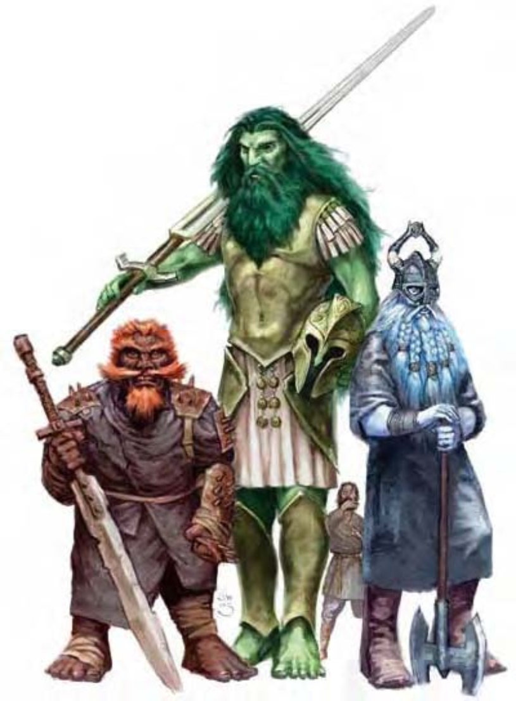

| 资料栏位 | 风暴巨人 (Storm Giant) 超大型巨人 |
| 生命骰 | 19d8+114 (199HP) |
| 先攻 | +2 |
| 速度 | 穿着胸甲时35英尺 (7格)、游泳30英尺 (6格)；基本速度50英尺、游泳40英尺 |
| 防御等级 | 27 (-2体型、+2敏捷、+12天生、+5胸甲)、接触10、措手不及25 |
| 基本攻击/擒抱 | +14 / +36 |
| 攻击 | 巨剑+26近战 (4d6+21 / 19-20)；或挥击+26近战 (1d6+14)；或复合长弓 (+14力量加值) +14远程 (3d6+14 / ×3) |
| 全力攻击 | 巨剑+26 / +21 / +16近战 (4d6+21 / 19-20)；或2挥击+26近战 (1d6+14)；或复合长弓 (+14力量加值) +14 / +9 / +4远程 (3d6+14 / ×3) |
| 占据/触及 | 15英尺 / 15英尺 |
| 特殊攻击 | 类法术能力 |
| 特殊能力 | 行动自如、对电击免疫、昏暗视觉、接石、水中呼吸 |
| 豁免 | 强韧+17、反射+8、意志+13 |
| 属性 | 力量39、敏捷14、体质23、智力16、感知20、魅力15 |
| 技能 | 攀爬+20、专注+26、手艺 (任一) +13、交涉+4、威吓+12、跳跃+24、聆听+15、表演 (歌唱) +12、察言观色+15、侦察+25、游泳+18* |
| 专长 | 震山击、顺势斩、战斗反射、精通冲撞、精通击破武器、钢铁意志、猛力攻击 |
| 环境 | 热暖带山脉 |
| 组织 | 单独或一家 (2-4，加上35%非战斗人员、1个7-10级术士或牧师及1-2只鹏鸟、2-5个狮鹫或2-8个海猫) |
| 挑战级数 | 13 |
| 宝藏 | 标准钱币、双倍宝物、标准物品 |
| 阵营 | 偏向混乱善良 |
| 进化 | 视人物职业而定 |
| 等级修正值 | ― |
风暴巨人的外貌类似人类，身材匀称但非常巨大，肤色浅绿，头发深绿，双眼像翡翠般闪闪发亮。
风暴巨人生性温柔而且不喜欢交际，心胸宽大，但生起气来非常可怕。
极少数风暴巨人会有一身紫色皮肤，这些巨人的毛发颜色介于深紫到蓝黑色间，眼睛则是紫色或铁灰色。成年风暴巨人身高约21英尺，重达12000磅，通常可以活到600岁。
风暴巨人多半穿着短而宽松的衣服，腰间用绳子系住，绑头巾，有些赤足有些穿拖鞋。他们通常只会佩带几件式样简单但手工精致的首饰，如：脚环 (赤足的巨人尤其喜欢)、戒指或发冠等。风暴巨人喜欢安静避世的生活，大部分时间都用来思考宇宙人生的大道理、创作或演奏音乐、耕田或收集食物。
风暴巨人的袋子并非扛在肩膀而是系在腰带上，内容包括1件简单乐器 (通常是排笛或竖琴) 和2d4件非魔法物品。除了身上的首饰之外，风暴巨人会把其他财产留在家里。风暴巨人拥有的东西通常都很简单 (甚至可以说是原始)，但非常精巧而且保养良好。
战斗战斗时，风暴巨人依靠武器和类法术能力，而非抛掷石块。他们的复合长弓的射程单位为180英尺。
类法术能力：每天1次――“召雷术” (DC=15)、“连环闪电” (DC=18)。施法者等级15。每天2次――“操控天气”、“浮空术”。施法者等级20。豁免检定DC的调整值与魅力调整值相同。
行动自如 (超自然)：风暴巨人随时都具有“行动自如”能力，效果与同名法术相同 (施法者等级20)。此效果可以被解除，但下一轮只要花费一个即时动作就可以再次启动。
水中呼吸 (特异)：风暴巨人可以永久在水中呼吸，在水中也可以使用类法术能力。
技能：风暴巨人在进行任何特殊动作或闪身避祸时，“游泳”检定具有+8种族加值。即使分心或受困，他们在进行“游泳”检定时都可以随时取10。若以直线前进，则可在游泳时进行奔跑动作。*无论装备重量，风暴巨人在游泳时都不会受到减值。
风暴巨人的城堡通常会盖在山顶尖端或水下，采集四周自然的食物，如果不足以维持生活，就会开辟果园、田地和棚架，以耕作为生。风暴巨人不喜欢圈养动物，宁可狩猎。居住在陆地上的风暴巨人常常和邻近的赤铜龙、善良云巨人结为同盟，相互协防。居住在水中的风暴巨人也会跟人鱼族和青铜龙建立类似的密切关系。
风暴巨人的人物成年风暴巨人中，约20%是术士或牧师。风暴巨人牧师可由下列领域择二：混乱、善良、保护或战争。